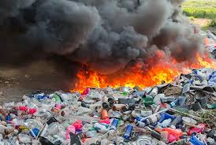

Alta producción de residuos
El aumento en la generación de residuos sólidos urbanos puede explicarse como resultado de múltiples factores, reconociéndose entre los más importantes el crecimiento urbano, el desarrollo industrial, las modificaciones tecnológicas y el cambio en los patrones de consumo de la población, entre otras. Él desperdicio de alimentos genera aproximadamente el 8% de todas las emisiones de gases de efecto invernadero ocasionadas por el hombre. Solo en Estados Unidos, la producción de alimentos perdidos o desperdiciados genera el equivalente en emisiones de gases de efecto invernadero a 43 millones de automóviles. La acumulación de residuos sólidos al aire libre es el ambiente propicio para que se desarrollen vectores (ratas, moscas y mosquitos, hongos, virus y bacterias) que constituyen un foco de infección para la población de las zonas afectadas por el basural y sobre todo para los trabajadores. Los residuos proceden de la descomposición de los residuos orgánicos -residuos de comida y de jardín, así como papel, cartón y madera- en entornos anaeróbicos (es decir, sin oxígeno). Si se desglosa por fuentes, el sector de los residuos se divide en emisiones procedentes de los residuos sólidos y de las aguas residuales. Las emisiones de residuos sólidos procedentes de vertederos y basureros representan la mayor parte de las emisiones de metano del sector. En este caso, la materia orgánica se descompone lentamente durante décadas, liberando lo que comúnmente se conoce como gas de vertedero (LFG), una combinación de metano y dióxido de carbono.

Producción de residuos
La producción de residuos provocada por las grandes industrias también tiene un impacto importante en el calentamiento global porque, cuanto más se produzcan, más crecen los niveles de gas metano en el ambiente. El gas metano es producto de la descomposición de materiales en vertederos.su proceso de descomposición, los residuos sólidos generan malos olores y gases, como metano (CH4) y dióxido de carbono (CO2), que ayudan a incrementar el efecto invernadero en el planeta, aumentando la temperatura y generando deshielo en los polos.

¿Cómo nos afectan los residuos?
Convivir con basura: el futuro que no queremos
Inundaciones, enfermedades, océanos contaminados son algunas de las muchas consecuencias por no tratar lo que desperdiciamos. Es que la basura no solo termina en grandes vertederos de mal olor: tiene un impacto devastador sobre el planeta y podría ser aún peor en el futuro.Estos residuos dañan los hábitats físicos, transportan contaminantes químicos, amenazan la vida acuática e interfieren con el uso humano de ríos y medio ambientes fluviales, marinos y costeros.
 Volver a la pagina...
Volver a la pagina...